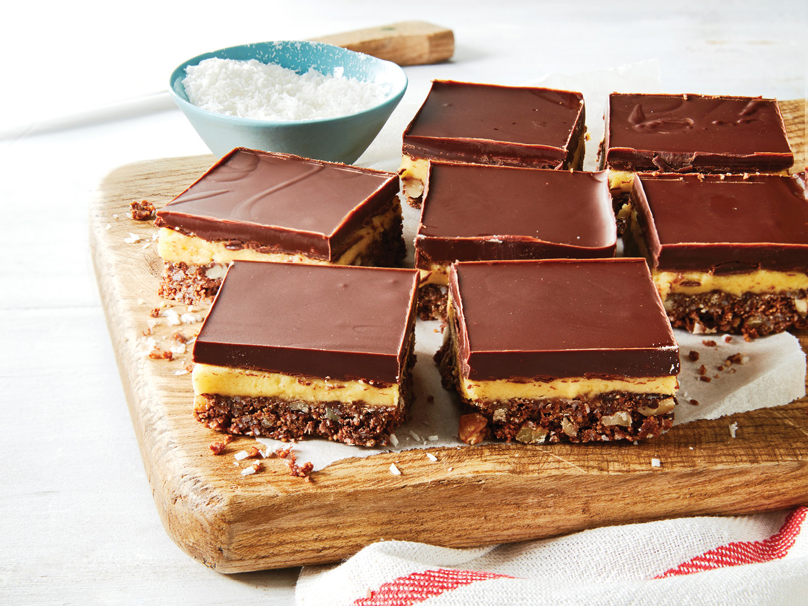

Nanaimo Bar

Description
Nanaimo Bars are a Canadian dessert served at every event ever held in Canada.
Ingredients
- 1/2 cup butter, softened
- 1/4 cup white sugar
- 5 tbsp unsweetened cocoa powder
- 1 egg, beaten
- 1 3/4 cups graham cracker crumbs
- 1 cup flaked coconut
- 1/2 cup finely chopped almonds
- 1/2 cup butter, softened
- 3 tbsp heavy cream
- 2 tbsp custard powder
- 2 cups confectioners' sugar
- 4 squares semisweet baking chocolate
- 2 tsp butter
Steps
- In the top of a double boiler, combine 1/2 cup butter, white sugar and cocoa powder. Stir occasionally until melted and smooth. Beat in the egg, stirring until thick, 2 to 3 minutes. Remove from heat and mix in the graham cracker crumbs, coconut and almonds (if you like). Press into the bottom of an ungreased 8x8 inch pan.
- For the middle layer, cream together 1/2 cup butter, heavy cream and custard powder until light and fluffy. Mix in the confectioners' sugar until smooth. Spread over the bottom layer in the pan. Chill to set.
- While the second layer is chilling, melt the semisweet chocolate and 2 teaspoons butter together in the microwave or over low heat. Spread over the chilled bars. Let the chocolate set before cutting into squares.